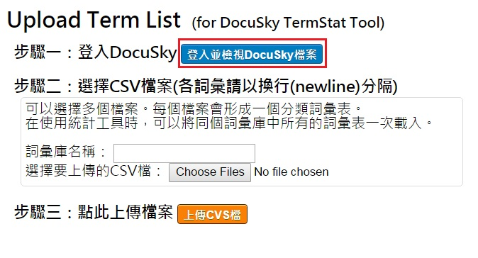
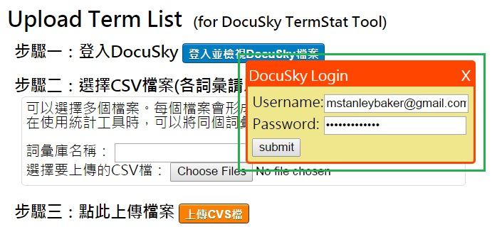
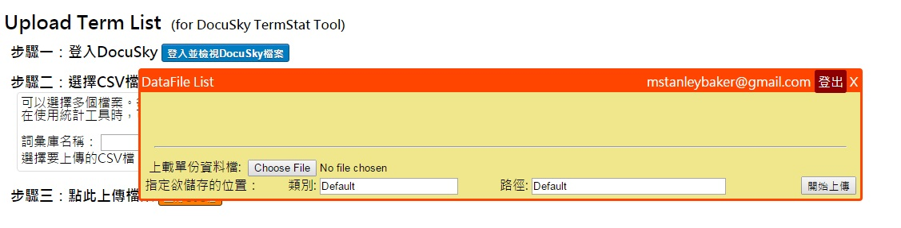
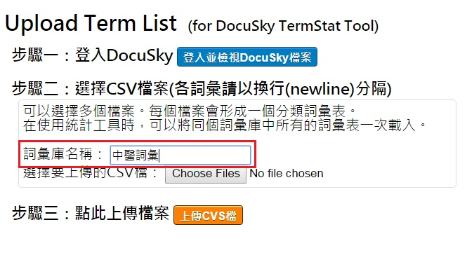
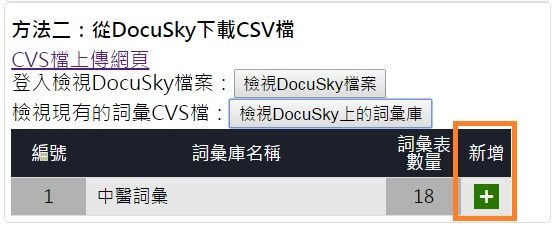

先在「步驟一」中點選「登入並檢視DocuSky檔案」按鈕開啟DocuSky Widget。
尚未登入DocuSky的情況下，DocuSky Widget會要求使用者輸入帳號與密碼。
成功登入後，會顯示使用者帳戶下現有的檔案列表。將Widget關掉(點選右上角的"X"按鈕)進行下一步驟。
在作為詞彙集的檔案當中，請用分行分隔每個詞彙。（請參考下面的範例）
請以UTF-8編碼格式的CSV檔（.csv）或純文字檔（.txt）儲存。
在「步驟二」中的「詞彙庫名稱」一欄輸入要將詞彙表存到哪個詞彙庫當中。
點選「步驟二」中的「瀏覽 / Choose Files」按鍵，會開啟本機端檔案的選擇畫面。
選擇所有要上傳的分類詞彙表檔案後，按下「新增」。
點選「步驟三」中的「上傳CVS檔」按鈕即會開始上傳。
上傳結束後則會跳出通知上傳成功或失敗的對話框。
在詞彙工具網頁中，先點選「詞彙 - 方法二：從DocuSky下載CVS檔」中的「檢視DocuSky檔案」按鈕登入並載入目前帳戶中的檔案列表。
再點選「檢視DocuSky上的詞彙庫」即可載入目前以建立的詞彙庫。下方會出現詞彙庫的列表。
點選列表中詞彙庫右方的「加入」按鈕就可以將詞彙庫中所有的詞彙表加入現有的分類詞彙列表中。
